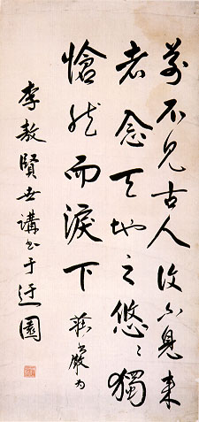

義助慰安婦
—— 李敖百件珍藏義賣藝術品（第95件）
品 名： I8. 莊嚴贈李敖條幅 預估價： 8 萬 成交價： （保留） 說 明： 前故宮博物院副院長莊嚴先生在李敖就讀台中一中高一時，特別給這位「賢世講」（讚美李敖先生為一賢明的後生晚輩）的墨寶，內容則是人人熟悉的唐朝陳子昂所作的〈登幽州臺歌〉。嚴格的說，台北外雙溪的故宮博物院不是真正的「故宮」，最原始的故宮博物院是在北京，乃遜清末代皇帝宣統被趕出宮後，所保留下來的遺址。當年，有一位北京大學哲學系學生「宣統出宮我進宮」，在故宮服務，一待就是一輩子，直到過世，連個人就是李敖的父執輩世交莊嚴先生（李敖父親當年為北京大學國文系學生）。
